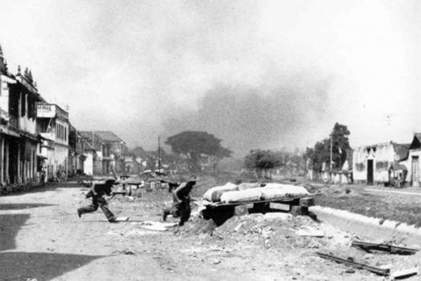
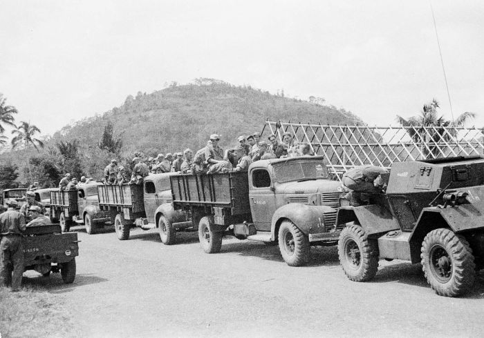
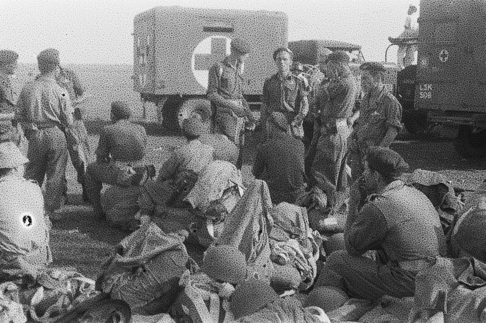
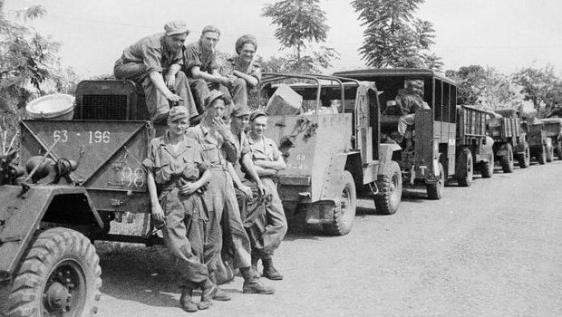
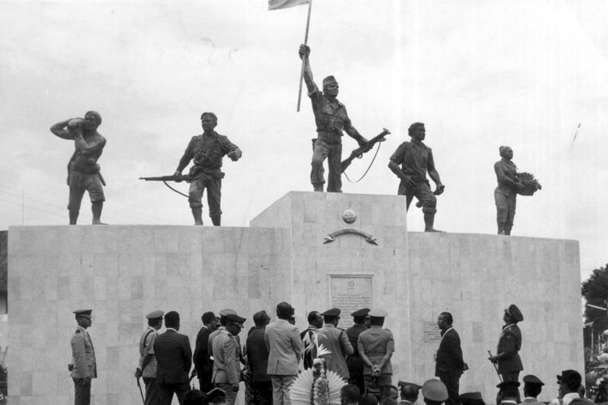
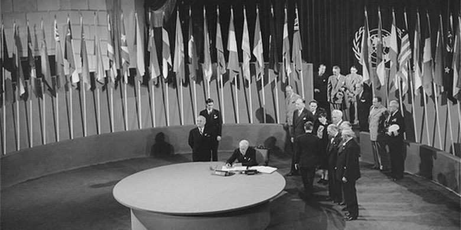
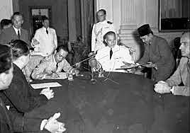

1.4.1 Kedatangan Sekutu dan NICA di Indonesia

Pada 16 September 1945 rombongan Sekutu mendarat di Tanjung Priok menggunakan kapal Cumberland. Sekutu diikuti pula oleh NICA (organisasi pemerintah sipil Belanda yang ingin menguasai Indonesia kembali.
Sekutu menugaskan AFNEI untuk mengurus Indonesia dengan tugas sebagai berikut:
- Menerima penyerahan kekuasaan dari tangan Indonesia
- Membebaskan para tawanan perang dan interniran Sekutu
- Melucuti dan memulangkan tentara Jepang
- Memulihkan keamanan dan ketertiban
- Mencari dan mengadili para penjahat perang
NICA dan KNIL melancarkan teror dan provokasi bagi pemimpin nasional hingga pecah berbagai pertempuran.
1.4.2 Agresi Militer I Belanda

Agresi Militer I Belanda dilaksanakan pada 21 Juli 1947 ketika Belanda melancarkan serangan terhadap daerah republik diantaranya pulau Jawa dan Sumatera. Alhasil, Belanda berhasil menguasai tempat-tempat penting di Indonesia.
Alasan agresi militer pertama bisa lancar sebagai berikut:
- Belanda memiliki senjata lengkap dan modern
- Pasukan republik terpencar
- Jalur komunikasi republik diputus Belanda
- Rakyat belum sepenuhnya bekerja sama
1.4.3 Agresi Militer II Belanda

Pada 19 Desember 1948, Belanda melaksanakan agresi militer keduanya. Dengan sasaran utama sebagai Yogyakarta. Di serangan tersebut, Soekarno diterbangkan ke Prapat dan ke Bangka, Hatta segera ditawan di Bangka.
Sebelum ditawan, terdapat sidang kabinet singkat yang menghasilkan:
- Menteri Kemakmuran Mr. Syafruddin Prawiranegara membentuk PDRI di Bukittinggi, Sumatra
- Presiden dan Wakil Presiden tetap dekat dengan KTN
- Pimpinan TNI ke luar kota untuk perang gerilya
1.4.4 Perang Gerilya Melawan Agresi Militer Belanda

Perundingan Linggajati terjadi pada 10-15 November 1946. Perundingan tersebut mengenai gencatan senjata antara Indonesia, Belanda, dan Sekutu.
Republik tidak sepenuhnya memercayai hasil dari Perundingan Linggajati. Maka Panglima Soedirman dan Jenderal Oerip Soemohardjo memperintahkan agar kubu-kubu di sekitar kantong-kantong yang diduduki Belanda dipertahankan.
Hingga akhirnya, agresi militer pertama Belanda dilaksanakan. Republik memilih taktik gerilya karena kekurangan senjata layak pakai.
Ciri-ciri taktik gerilya sebagai berikut:
- Menghindari perang terbuka
- Menghantam musuh secara tiba-tiba
- Menghilang di lebatnya hutan atau kegelapan malam
- Menyamar sebagai rakyat biasa
Dengan dipertajamnya perang gerilya, Belanda terdesak dan menerima kecaman. Pada akhirnya, Belanda bersedia berunding dengan Indonesia.
1.4.5 Serangan Umum 1 Maret 1949

Sebulan setelah terjadinya Agresi Militer II Belanda, tentara republik memiliki waktu untuk membenahi pasukan di berbagai sektor pertempuran. Tentara republik kemudian bisa melancarkan serangan terhadap Belanda.
Di perjuangan serangan terhadap Belanda, para lurah menggerakan rakyatnya untuk membantu TNI. Dengan semua perjuangan tersebut, pasukan Belanda terpencar ke luar kota, tentara republik menyerang dalam kota.
Peristiwa penting dimulai ketika Sri Sultan Hamengkubuwono IX mendengar bahwa Dewan Keamanan PBB akan membicarakan masalah Indonesia pada Maret 1949. Sri Sultan mengirim surat pada Panglima Besar Soedirman agar diadakannya serangan umum. Maka disusun serangan umum atas kedudukan Belanda di Yogyakarta dibawah pimpinan Kolonel van Langen.

Serangan umum dilancarkan pada pukul 06.00. Tentara Belanda kawalahan mencoba melawan serangan tersebut di pagi hari. Apalagi dengan alat komunikasi diputuskan. Berita serangan lanjut disebarkan ke luar negeri.
Dampak dari serangan umum sebagai berikut:
- Menunjukkan bahwa pemerintah RI masih ada dan TNI masih mampu menyerang
- Mendukung perjuangan diplomasi pemerintah RI
- Mendorong pergantian sikap AS agar Belanda merunding dengan RI
- Meninggikan moral rakyat dan TNI
- Mematahkan moral dan semangat Belanda
1.4.6 Diplomasi Indonesia Menghadapi Sekutu dan NICA

PERJANJIAN LINGGAJATI berawal ketika dua utusan Indonesia dan Belanda berunding di Jakarta dan menghasilkan persetujuan:
- Gencatan senjata antara Indonesia, Belanda, dan Inggris
- Dibentuknya Komisi Bersama Gencatan Senjata untuk mengawasi gencatan senjata tersebut
- Belanda mengakui de facto RI dengan wilayah kekuasaan meliputi Sumatra, Jawa, dan Madura
- RI dan Belanda membentuk NIS dengan nama RIS dengan bagiannya RI
- RIS dan Belanda membentuk Uni Indonesia-Belanda dengan ketuanya sebagai Ratu Belanda
PERJANJIAN RENVILLE memiliki isi pokok sebagai berikut:
- Disetujui pelaksanaan gencatan senjata
- Disetujui garis demarkasi menandai wilayah RI dan daerah pendudukan Belanda
- TNI ditarik mundur dari daerah kantongnya
- Pernyataan Delegasi Indonesia
- Memerintahkan TNI menghentikan perang gerilya
- Kerja sama mengembalikan perdamaian, ketertiban, dan keamanan
- Ikut serta Konferensi Meja Bundar
- Pernyataan Delegasi Belanda
- Menyetujui pemerintahan RI ke Yogyakarta
- Menjamin penghentian gerakan militer dan membebaskan tahanan politik
- Tidak mendirikan negara-negara di daerah dikuasai RI dan tidak merugikan pihak RI
- Menyetujui RI sebagai bagian NIS
- Berusaha sungguh-sungguh menyelenggarakan KMB
- BFO mengakui NIS menerima kedaulatan Belanda dan RI
- Menyetujui pembentukan Komite Persiapan Nasional
- Negara bagian tidak memiliki tentara terpisah
- BFO mendukung tuntutan RI
- MASALAH UNI INDONESIA BELANDA
- Indonesia ingin Uni bersifat kerja sama bebas, Belanda menghendaki uni bersifat permanen
- UTANG HINDIA BELANDA
- Indonesia mengakui utang Hindia Belanda sampai menyerahnya Belanda ke Jepang. Selama itu, Indonesia mengambil alih semua utang Hindia Belanda sampai saat berlangsungnya konferensi.
- Belanda mengakui kedaulatan RIS pada akhir Desember 1949
- Status Irian Barat ditunda setahun
- Dibentuk Uni Indonesia-Belanda berdasarkan kerja sama sukarela dan sederajat
- RIS membayar semua utang Belanda sejak tahun 1942
- Pasukan Belanda KL dan KM dipulangkan, KNIL dibubarkan, dan bekas KNIL menjadi APRIS.
1.4.7 Diplomasi Indonesia Menarik Dukungan Internasional

- PERANAN PBB MELALUI KTN
- Terjadi laporan dimana meskipun ada gencatan senjata, Belanda tetap ingin memperluas wilayahnya. Maka ditanggapi dengan dibentuknya KTN yang terdiri dari Australia, Belgia, dan AS. KTN berhasil mendekati pihak yang bertikai hingga akhirnya terjadi Perundingan Renville.
- PERANAN PBB MELALUI UNCI
- Dewan keamanan PBB mengeluarkan solusi terhadap pertikaian Belanda-Indonesia yakni, penghentian operasi militer Belanda, pembebasan tahanan politik RI, kesempatan pemimpin RI kembali ke Yogyakarta, perundingan baru, KTN diubah nama menjadi UNCI.
- UNCI menekan Belanda agar menhentikan agresi militer dan mengembalikan pemimpin ke Yogyakarta. Hingga akhirnya Perundingan Roem-Royen mengakhiri pertikaian Indonesia-Belanda.
1.4.8 Penandatanganan Kedaulatan RIS pada 27 Des 1949

Penandatangan dilaksanakan pada waktu bersamaan di Indonesia dan Belanda. Momen tersebut menjadi akhir perjuangan bersenjata dan diplomasi bangsa Indonesia untuk menegakkan kemerdekaan. Peristiwa ini menjadi momentum kemerdekaan de jure RIS.